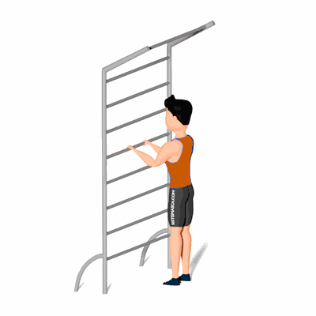

Alongamento do Peitoral de Frente

Exercício de alongamento para a peito e a concavidade das região torácica, preparando para a atividade física.
Ficha Técnica
Tipo: Alongamento
Grupo Muscular: Peito
Aparelho: Nenhum
Músculos: Nenhum
Como realizar
- De pé e de frente para o espaldar;
- Fique com os pés paralelos e as mãos apoiadas;
- Incline o corpo para baixo, com o cuidado de não hiperestender a região lombar;
- Segurar esta posição pelo tempo previamente estipulado pelo professor.
 RC STORE
RC STORE